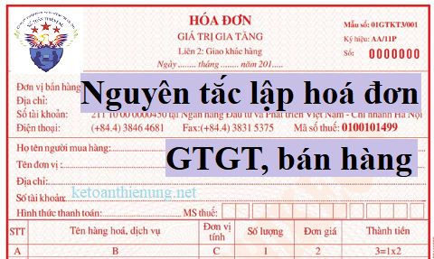

Những nguyên tắc lập hóa đơn giá trị gia tăng, hoá đơn bán hàng khi bán hàng hoá, dịch vụ, xây dựng, xây lắp .... theo Thông tư 39/2014/TT-BTC, Thông tư 119/2014/TT-BTC, Thông tư 26/2015/TT-BTC mới nhất hiện nay:
1. Nguyên tắc lập hóa đơn GTGT:
a) Tổ chức, hộ, cá nhân kinh doanh chỉ được lập và giao cho người mua hàng hóa, dịch vụ các loại hóa đơn theo hướng dẫn tại Thông tư này.
b) Người bán phải lập hóa đơn khi bán hàng hóa, dịch vụ, bao gồm cả các trường hợp hàng hoá, dịch vụ dùng để khuyến mại, quảng cáo, hàng mẫu; hàng hoá, dịch vụ dùng để cho, biếu, tặng, trao đổi, trả thay lương cho người lao động (trừ hàng hoá luân chuyển nội bộ, tiêu dùng nội bộ để tiếp tục quá trình sản xuất).
- Nội dung trên hóa đơn phải đúng nội dung nghiệp vụ kinh tế phát sinh; không được tẩy xóa, sửa chữa; phải dùng cùng màu mực, loại mực không phai, không sử dụng mực đỏ; chữ số và chữ viết phải liên tục, không ngắt quãng, không viết hoặc in đè lên chữ in sẵn và gạch chéo phần còn trống (nếu có).
- Trường hợp hoá đơn tự in hoặc hoá đơn đặt in được lập bằng máy tính nếu có phần còn trống trên hoá đơn thì không phải gạch chéo.
c) Hóa đơn được lập một lần thành nhiều liên. Nội dung lập trên hóa đơn phải được thống nhất trên các liên hóa đơn có cùng một số.
Đối với hóa đơn thu cước dịch vụ viễn thông, hóa đơn tiền điện, hóa đơn tiền nước, hóa đơn thu phí của các ngân hàng, vé vận tải hành khách của các đơn vị vận tải, các loại tem, vé, thẻ và một số trường hợp theo hướng dẫn của Bộ Tài chính, khi lập hóa đơn được thay thế liên 1 bằng bảng kê chi tiết số hóa đơn thực tế đã lập. Chi tiết mỗi số hóa đơn giao khách hàng được thể hiện trên một dòng của Bảng kê với đầy đủ các tiêu thức đã được đăng ký tại hóa đơn mẫu gửi cùng Thông báo phát hành hóa đơn đến cơ quan thuế quản lý trực tiếp.
Bảng kê được lập hàng tháng, được in ra giấy để lưu trữ bảo quản hoặc lưu trữ bằng phương tiện điện tử (Ví dụ như: bút nhớ (đĩa flash USB), đĩa CD và DVD, đĩa cứng gắn ngoài, đĩa cứng gắn trong). Việc bảo quản, lưu trữ bảng kê thực hiện theo quy định hiện hành về bảo quản, lưu trữ tài liệu kế toán. Nếu lưu trữ bằng giấy thì bảng kê phải có đầy đủ tên, chữ ký người lập bảng kê; tên, chữ ký thủ trưởng đơn vị; dấu đơn vị. Nếu lưu trữ bằng phương tiện điện tử thì bảng kê phải có chữ ký điện tử của đơn vị và nội dung bảng kê phải đảm bảo có thể truy cập kết xuất và in ra giấy khi cần tham chiếu. Các đơn vị phải chịu trách nhiệm về tính chính xác và đầy đủ thông tin trên bảng kê hóa đơn đã lập trong ngày, trong tháng và phải đảm bảo lưu trữ để cung cấp cho cơ quan thuế và các cơ quan chức năng khác khi có yêu cầu”.
d) Hóa đơn được lập theo thứ tự liên tục từ số nhỏ đến số lớn.
Trường hợp tổ chức kinh doanh có nhiều đơn vị trực thuộc trực tiếp bán hàng hoặc nhiều cơ sở nhận ủy nhiệm cùng sử dụng hình thức hóa đơn đặt in có cùng ký hiệu theo phương thức phân chia cho từng cơ sở trong toàn hệ thống thì tổ chức kinh doanh phải có sổ theo dõi phân bổ số lượng hóa đơn cho từng đơn vị trực thuộc, từng cơ sở nhận ủy nhiệm. Các đơn vị trực thuộc, cơ sở nhận ủy nhiệm phải sử dụng hóa đơn theo thứ tự từ số nhỏ đến số lớn trong phạm vi số hóa đơn được phân chia.
Trường hợp tổ chức kinh doanh có nhiều cơ sở bán hàng hoặc nhiều cơ sở được ủy nhiệm đồng thời cùng sử dụng một loại hóa đơn tự in, hóa đơn điện tử có cùng ký hiệu theo phương thức truy xuất ngẫu nhiên từ một máy chủ thì tổ chức kinh doanh phải có quyết định phương án cụ thể về việc truy xuất ngẫu nhiên của các cơ sở bán hàng và đơn vị được ủy nhiệm. Thứ tự lập hóa đơn được tính từ số nhỏ đến số lớn cho hóa đơn truy xuất toàn hệ thống của tổ chức kinh doanh.
2. Cách lập một số tiêu thức cụ thể trên hóa đơn
a) Tiêu thức “Ngày tháng năm” lập hóa đơn
- Ngày lập hóa đơn đối với bán hàng hóa là thời điểm chuyển giao quyền sở hữu hoặc quyền sử dụng hàng hóa cho người mua, không phân biệt đã thu được tiền hay chưa thu được tiền.
- Ngày lập hóa đơn đối với cung ứng dịch vụ là ngày hoàn thành việc cung ứng dịch vụ, không phân biệt đã thu được tiền hay chưa thu được tiền. Trường hợp tổ chức cung ứng dịch vụ thực hiện thu tiền trước hoặc trong khi cung ứng dịch vụ thì ngày lập hóa đơn là ngày thu tiền.
- Ngày lập hóa đơn đối với hoạt động cung cấp điện sinh hoạt, nước sinh hoạt, dịch vụ viễn thông, dịch vụ truyền hình thực hiện chậm nhất không quá bảy (7) ngày kế tiếp kể từ ngày ghi chỉ số điện, nước tiêu thụ trên đồng hồ hoặc ngày kết thúc kỳ quy ước đối với việc cung cấp dịch vụ viễn thông, truyền hình. Kỳ quy ước để làm căn cứ tính lượng hàng hóa, dịch vụ cung cấp căn cứ thỏa thuận giữa đơn vị cung cấp dịch vụ viễn thông, truyền hình với người mua.
- Ngày lập hóa đơn đối với xây dựng, lắp đặt là thời điểm nghiệm thu, bàn giao công trình, hạng mục công trình, khối lượng xây dựng, lắp đặt hoàn thành, không phân biệt đã thu được tiền hay chưa thu được tiền.
Trường hợp giao hàng nhiều lần hoặc bàn giao từng hạng mục, công đoạn dịch vụ thì mỗi lần giao hàng hoặc bàn giao đều phải lập hóa đơn cho khối lượng, giá trị hàng hóa, dịch vụ được giao tương ứng.
Trường hợp tổ chức kinh doanh bất động sản, xây dựng cơ sở hạ tầng, xây dựng nhà để bán, chuyển nhượng có thực hiện thu tiền theo tiến độ thực hiện dự án hoặc tiến độ thu tiền ghi trong hợp đồng thì ngày lập hóa đơn là ngày thu tiền.
- Trường hợp bán xăng dầu tại các cửa hàng bán lẻ cho người mua thường xuyên là tổ chức, cá nhân kinh doanh; cung cấp dịch vụ ngân hàng, chứng khoán, ngày lập hóa đơn thực hiện định kỳ theo hợp đồng giữa hai bên kèm bảng kê hoặc chứng từ khác có xác nhận của hai bên, nhưng chậm nhất là ngày cuối cùng của tháng phát sinh hoạt động mua bán hàng hóa hoặc cung cấp dịch vụ.
Chi tiết: Thời điểm xuất hoá đơn GTGT
“b) Tiêu thức “Tên, địa chỉ, mã số thuế của người bán”, “tên, địa chỉ, mã số thuế của người mua”
- Người bán phải ghi đúng tiêu thức “mã số thuế” của người mua và người bán.
- Tiêu thức “tên, địa chỉ” của người bán, người mua phải viết đầy đủ, trường hợp viết tắt thì phải đảm bảo xác định đúng người mua, người bán.
- Trường hợp tên, địa chỉ người mua quá dài, trên hóa đơn người bán được viết ngắn gọn một số danh từ thông dụng như: "Phường" thành "P"; "Quận" thành "Q", "Thành phố" thành "TP", "Việt Nam" thành "VN" hoặc "Cổ phần" là "CP", "Trách nhiệm Hữu hạn" thành "TNHH", "khu công nghiệp" thành "KCN", "sản xuất" thành "SX", "Chi nhánh" thành "CN"… nhưng phải đảm bảo đầy đủ số nhà, tên đường phố, phường, xã, quận, huyện, thành phố, xác định được chính xác tên, địa chỉ doanh nghiệp và phù hợp với đăng ký kinh doanh, đăng ký thuế của doanh nghiệp.
- Trường hợp tổ chức bán hàng có đơn vị trực thuộc có mã số thuế trực tiếp bán hàng thì ghi tên, địa chỉ, mã số thuế của đơn vị trực thuộc. Trường hợp đơn vị trực thuộc không có mã số thuế thì ghi mã số thuế của trụ sở chính.
- Trường hợp khi bán hàng hóa, cung ứng dịch vụ từ 200.000 đồng trở lên mỗi lần, người mua không lấy hóa đơn hoặc không cung cấp tên, địa chỉ, mã số thuế (nếu có) thì vẫn phải lập hóa đơn và ghi rõ “người mua không lấy hoá đơn” hoặc “người mua không cung cấp tên, địa chỉ, mã số thuế.
- Riêng đối với các đơn vị bán lẻ xăng dầu, nếu người mua không yêu cầu lấy hoá đơn, cuối ngày đơn vị phải lập chung một hoá đơn cho tổng doanh thu người mua không lấy hoá đơn phát sinh trong ngày.
- Trường hợp hóa đơn đã lập có sai sót về tên, địa chỉ người mua nhưng ghi đúng mã số thuế người mua thì các bên lập biên bản điều chỉnh và không phải lập hóa đơn điều chỉnh. Các trường hợp hóa đơn đã lập có sai sót khác thực hiện theo hướng dẫn tại Điều 20 Thông tư số 39/2014/TT-BTC của Bộ Tài chính.”
c) Tiêu thức “Số thứ tự, tên hàng hóa, dịch vụ, đơn vị tính, số lượng, đơn giá, thành tiền”:
- Ghi theo thứ tự tên hàng hóa, dịch vụ bán ra; gạch chéo phần bỏ trống (nếu có).
- Trường hợp hóa đơn tự in hoặc hóa đơn đặt in được lập bằng máy tính nếu có phần còn trống trên hóa đơn thì không phải gạch chéo.
- Trường hợp người bán quy định mã hàng hóa, dịch vụ để quản lý thì khi ghi hóa đơn phải ghi cả mã hàng hóa và tên hàng hóa.
- Các loại hàng hóa cần phải đăng ký quyền sử dụng, quyền sở hữu thì phải ghi trên hóa đơn các loại số hiệu, ký hiệu đặc trưng của hàng hóa mà khi đăng ký pháp luật có yêu cầu. Ví dụ: số khung, số máy của ô tô, mô tô; địa chỉ, cấp nhà, chiều dài, chiều rộng, số tầng của ngôi nhà hoặc căn hộ…
- Các loại hàng hóa, dịch vụ đặc thù như điện, nước, điện thoại, xăng dầu, bảo hiểm…được bán theo kỳ nhất định thì trên hóa đơn phải ghi cụ thể kỳ cung cấp hàng hóa, dịch vụ.
d) Tiêu thức “người bán hàng (ký, đóng dấu, ghi rõ họ tên)”
- Trường hợp thủ trưởng đơn vị không ký vào tiêu thức người bán hàng thì phải có giấy ủy quyền của thủ trưởng đơn vị cho người trực tiếp bán ký, ghi rõ họ tên trên hóa đơn và đóng dấu của tổ chức vào phía trên bên trái của tờ hóa đơn.
Xem thêm: Mẫu giấy uỷ quyền ký hoá đơn GTGT
đ) Tiêu thức “người mua hàng (ký, ghi rõ họ tên)”
- Riêng đối với việc mua hàng không trực tiếp như: Mua hàng qua điện thoại, qua mạng, FAX thì người mua hàng không nhất thiết phải ký, ghi rõ họ tên trên hóa đơn. Khi lập hóa đơn tại tiêu thức “người mua hàng (ký, ghi rõ họ tên)”, người bán hàng phải ghi rõ là bán hàng qua điện thoại, qua mạng, FAX.
- Khi lập hóa đơn cho hoạt động bán hàng hóa, cung ứng dịch vụ ra nước ngoài, trên hóa đơn không nhất thiết phải có chữ ký của người mua nước ngoài.
e) Đồng tiền ghi trên hóa đơn
- Đồng tiền ghi trên hóa đơn là đồng Việt Nam.
- Trường hợp người bán được bán hàng thu ngoại tệ theo quy định của pháp luật, tổng số tiền thanh toán được ghi bằng nguyên tệ, phần chữ ghi bằng tiếng Việt.
Ví dụ: 10.000 USD - Mười nghìn đô la Mỹ.
Người bán đồng thời ghi trên hóa đơn tỷ giá ngoại tệ với đồng Việt Nam theo tỷ giá giao dịch bình quân của thị trường ngoại tệ liên ngân hàng do Ngân hàng Nhà nước Việt Nam công bố tại thời điểm lập hóa đơn.
Trường hợp ngoại tệ thu về là loại không có tỷ giá với đồng Việt Nam thì ghi tỷ giá chéo với một loại ngoại tệ được Ngân hàng Nhà nước Việt Nam công bố tỷ giá.
Để hiểu rõ hơn và thực tế hơn các bạn có thể xem thêm: Cách viết hóa đơn giá trị gia tăng
Chúc các bạn thành công
